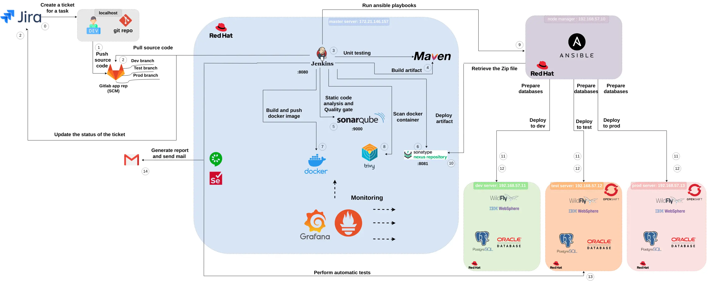

Salut ! Je suis Firas Ben Nacib
Ingénieur Cloud & DevOps
Tunisie
25 ans
Kubestronaut | Certifié AWS, Azure, Kubernetes & Terraform
Fan d’Infrastructure as Code
À propos de moi
Bonjour ! Je m’appelle Firas, ingénieur Cloud & DevOps passionné par AWS et l’automatisation. Je conçois des pipelines CI/CD robustes, j’administre l’infrastructure avec Terraform et Ansible, et j’explore Kubernetes et le GitOps pour simplifier la vie. J’ai aussi travaillé avec Azure, mais AWS reste mon terrain de jeu favori.
Projets

Plateforme AWS EKS avec réseau privé et modules Terraform réutilisables pour un provisionnement cohérent. Le périmètre inclut la livraison GitOps avec Argo CD et Helm, les mises à jour de release via CircleCI, l’autoscaling Karpenter et la supervision du cluster.
Outils : AWS (EKS, EC2, VPC, ALB, ECR, IAM/IRSA, Route 53, ACM, CloudWatch), Terraform, Kubernetes, Helm, Argo CD, CircleCI, Karpenter, ExternalDNS, Fluent Bit, Prometheus, Grafana, Trivy

Site Cloud Resume Challenge sur AWS avec diffusion globale, TLS sur domaine personnalisé et compteur de visites serverless. L’implémentation comprend des pipelines GitHub Actions, des métriques CloudWatch et des alertes SNS pour le déploiement et le suivi en exécution.
Outils : AWS (S3, CloudFront, ACM, Route 53, Lambda, API Gateway, DynamoDB, CloudWatch, SNS, IAM), Terraform, GitHub Actions

Outil PowerShell pour créer et gérer des clusters Kubernetes k3s locaux sur des VM Ubuntu Multipass.
Outils : PowerShell, k3s, Kubernetes, Multipass, Hyper-V, VM Ubuntu

Script PowerShell interactif pour créer et initialiser des clusters Kubernetes Talos Linux sur Hyper-V.
Outils : PowerShell, Talos Linux, Kubernetes, Hyper-V
Infrastructure AWS Terraform orientée maîtrise des coûts avec composants modulaires EC2 Auto Scaling, RDS, S3 et CloudFront. Des règles EventBridge et des fonctions Lambda gèrent le cycle de vie compute et base de données, les mises à jour de routage et la synchronisation des règles de sécurité.
Outils : AWS (EC2, Auto Scaling, RDS, S3, CloudFront, Lambda, Lambda@Edge, Route 53, ACM, IAM, CloudWatch, EventBridge), Terraform, GitLab CI, Docker
Prototype de messagerie basé sur Spring Boot et ActiveMQ, conteneurisé avec Docker et livré via Jenkins avec quality gates. Le flux de déploiement combine l’autoscaling Kubernetes, les workflows de livraison et les hooks d’alerting pour l’exploitation du service.
Outils : Java, Spring Boot, Maven, ActiveMQ, Docker, Jenkins, Kubernetes, KEDA, Argo CD, Prometheus, Alertes Grafana, SonarQube, Weka

Architecture CI et déploiement enterprise reliant Jira et GitLab aux étapes Jenkins et Maven, quality gates SonarQube, workflow Docker et Trivy, livraison Nexus, déploiements Ansible vers des serveurs OpenShift dev, test et prod, et monitoring Prometheus et Grafana.
Outils : Jira, GitLab, Jenkins, Maven, SonarQube, Docker, Trivy, Nexus Repository, Ansible, OpenShift, WildFly, IBM WebSphere, PostgreSQL, Oracle Database, Prometheus, Grafana, Selenium
Compétences
Cloud & Infrastructure
Conteneurs & Orchestration
Supervision & Logging
Bases de données & Serveurs
Distributions Linux
Sécurité
Langages & Scripting
Virtualisation & Plateformes
Certifications


Certified Kubernetes Application Developer (CKAD)
Délivrée par The Linux Foundation
Voir le certificat
Kubernetes and Cloud Native Security Associate (KCSA)
Délivrée par The Linux Foundation
Voir le certificat